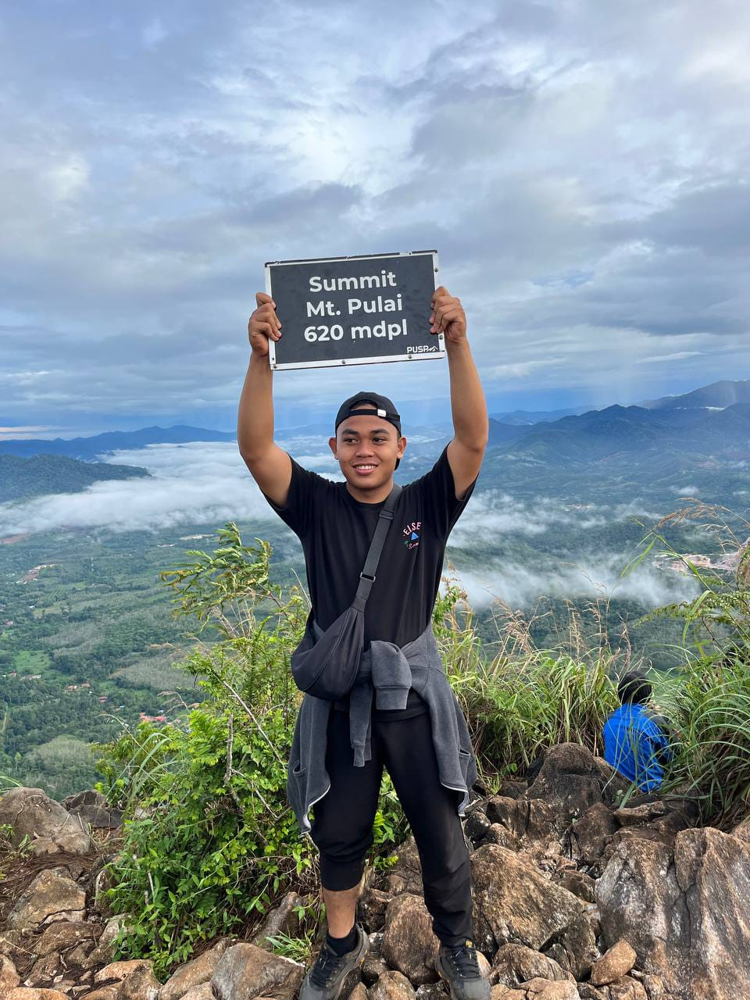
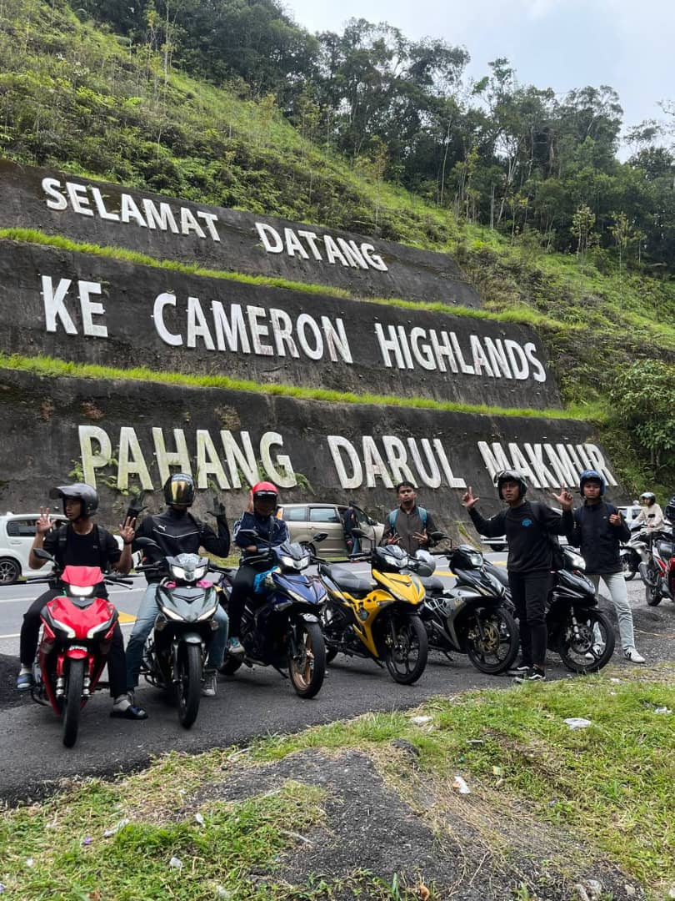
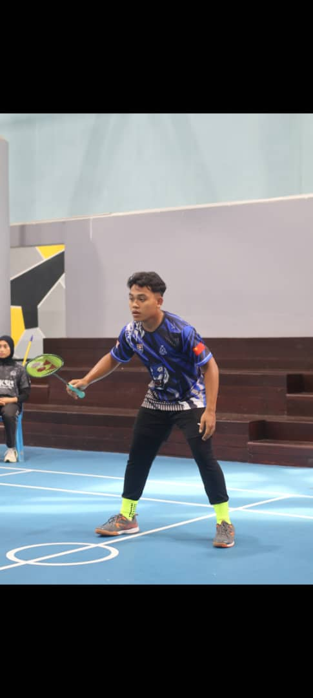
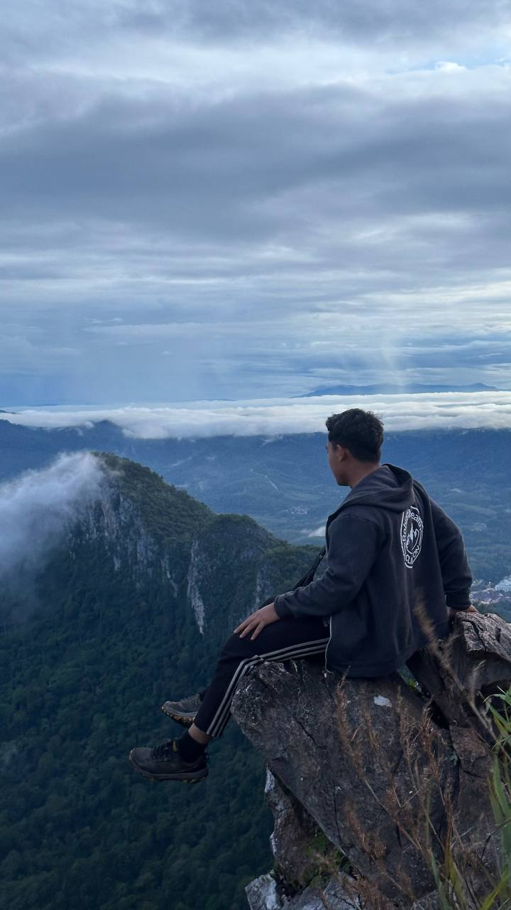

Personal Information
Name: Muhammad Aidiel Syaamil Bin Mohd Zaini
Date of Birth: November 25, 2004
Residence: Baling, Kedah
Gender: Male
Nationality: Malaysia
Contact Details
Email: aidielsyamil@gmail.com
Phone no: +60 13 3266 850
Address: Kampung Carok bemban, Mukim Pulai, 09100 Baling, Kedah
Hobbies
Travelling, Badminton, Hiking.


